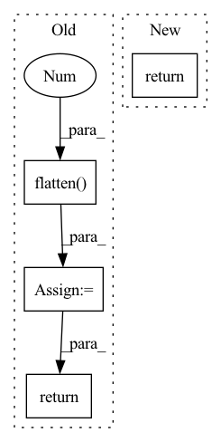

Pattern ID :2743
Before Change
def forward(self, x: torch.Tensor) -> torch.Tensor:
out = self.features(x)
out = torch.flatten( out, 1 )
out = self.classifier(out)
return out
class Generator(nn.Module):After Change
self._initialize_weights()
def forward(self, x: torch.Tensor) -> torch.Tensor:
return self._forward_impl(x)
// Support torch.script function
def _forward_impl(self, x: torch.Tensor) -> torch.Tensor:In pattern: SUPERPATTERN
Frequency: 5
Non-data size: 4
Instances Fragment ID: 9106938
Project Name: lornatang/real_esrgan-pytorch
Commit Name: 970341e87f464419e32467947031495583f70c77
Time: 2022-04-18
Author: liuchangyu1111@gmail.com
File Name: model.py
M Class Name: Discriminator
N Class Name: Discriminator
M Method Name: forward(2)
N Method Name: forward(2)
M Parent Class: nn.Module
N Parent Class: nn.Module
M File Name: model.py
N File Name: model.py
M Start Line: 171
M End Line: 175
N Start Line: 160
N End Line: 160
Before Change
x = self.relu3(self.bn3(self.conv3(x)))
x = self.relu4(self.bn4(self.conv4(x)))
x = F.max_pool2d(x, 2)
x = torch.flatten( x, 1 )
x = self.fc1(x)
return x
def get_model(**kwargs: bool) -> nn.Module:After Change
def forward(self, x: torch.Tensor) -> torch.Tensor:
Forward.
return self._forward_impl(x)
def get_model(**kwargs: bool) -> nn.Module: Fragment ID: 9106939
Project Name: j-marple-dev/model_compression
Commit Name: 00276493c8fc6c1c66e4500b9a4ad26526384feb
Time: 2020-07-11
Author: jwpark@jmarple.ai
File Name: src/models/simplenet.py
M Class Name: SimpleNet
N Class Name: SimpleNet
M Method Name: forward(2)
N Method Name: forward(2)
M Parent Class: nn.Module
N Parent Class: nn.Module
M File Name: src/models/simplenet.py
N File Name: src/models/simplenet.py
M Start Line: 38
M End Line: 47
N Start Line: 50
N End Line: 50
Before Change
x = self.proj(x)
Hp, Wp = x.shape[2], x.shape[3]
x = x.flatten(2 ) .transpose(1, 2)
return x, (Hp, Wp)
class HybridEmbed(nn.Module):After Change
x = self.proj(x)
// B C H W -> B H W C
x = x.permute(0, 2, 3, 1)
return x
class Attention(nn.Module): Fragment ID: 9106942
Project Name: alibaba/easycv
Commit Name: 9f01a37ad4df57b30430c41df08459025174e8fd
Time: 2022-09-15
Author: 38110862+tuofeilunhifi@users.noreply.github.com
File Name: easycv/models/backbones/vitdet.py
M Class Name: PatchEmbed
N Class Name: PatchEmbed
M Method Name: forward(2)
N Method Name: forward(2)
M Parent Class: nn.Module
N Parent Class: nn.Module
M File Name: easycv/models/backbones/vitdet.py
N File Name: easycv/models/backbones/vitdet.py
M Start Line: 530
M End Line: 538
N Start Line: 188
N End Line: 191
Before Change
out = self.net(x)
res = x if self.downsample is None else self.downsample(x)
o = self.relu(out + res)
o = o.flatten(1 , -1)
return self.classifier(o)
class TemporalConvNet(nn.Module):After Change
def forward(self, x):
out = self.net(x)
res = x if self.downsample is None else self.downsample(x)
return self.relu(out + res)
class TemporalConvNet(nn.Module): Fragment ID: 9106940
Project Name: kolaszko/haptic_transformer
Commit Name: 8c96d12327041a7a2e57b6293b37be63416d873c
Time: 2021-05-12
Author: mikolaj.lysakowski.bk@gmail.com
File Name: models/tcn.py
M Class Name: TemporalBlock
N Class Name: TemporalBlock
M Method Name: forward(2)
N Method Name: forward(2)
M Parent Class: nn.Module
N Parent Class: nn.Module
M File Name: models/tcn.py
N File Name: models/tcn.py
M Start Line: 52
M End Line: 54
N Start Line: 46
N End Line: 46
Before Change
combined = self.norm_1(combined)
cls_token, _ = self.attn(combined[:,:1], combined, combined, need_weights=False)
cls_token = torch.flatten( cls_token, 1 ) // (N, 1, C) -> (N, C)
cls_token = cls_token + self.drop_path(cls_token * self.layer_scale_1)
cls_token = self.norm_2(cls_token)
cls_token = self.mlp(cls_token)
cls_token = cls_token + self.drop_path(cls_token * self.layer_scale_2)
cls_token = self.norm_3(cls_token)
return cls_token
class PatchConvNet(BaseBackbone):After Change
cls_token = cls_token + self.drop_path(out * self.layer_scale_2)
out = self.norm_3(cls_token).squeeze(1) // (N, 1, C) -> (N, C)
return out
class PatchConvNet(BaseBackbone): Fragment ID: 9106935
Project Name: gau-nernst/vision-toolbox
Commit Name: 9c33936b15da329b7d51d981196aca20d5e00077
Time: 2022-03-04
Author: gau.nernst@yahoo.com.sg
File Name: vision_toolbox/backbones/patchconvnet.py
M Class Name: AttentionPooling
N Class Name: AttentionPooling
M Method Name: forward(2)
N Method Name: forward(2)
M Parent Class: nn.Module
N Parent Class: nn.Module
M File Name: vision_toolbox/backbones/patchconvnet.py
N File Name: vision_toolbox/backbones/patchconvnet.py
M Start Line: 119
M End Line: 132
N Start Line: 141
N End Line: 151